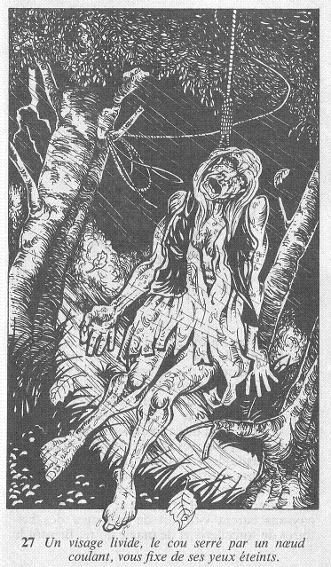

Vous écartez complètement les rideaux, et vous regardez au-dehors. Mais la lumière de la pièce vous empêche de distinguer quoi que ce soit, et vous tirez les rideaux derrière vous. Le nez collé à la vitre, vous écarquillez les yeux. Un grondement de tonnerre se fait entendre, et la pluie redouble de vigueur, formant comme un rideau devant vous. Un éclair illumine soudain la nuit, et une vision d'horreur vous apparaît qui vous fait pousser un hurlement. Là, dehors, à peu de distance de la fenêtre, un visage livide dégoulinant d'eau, se balance dans le vent ! un visage allongé, le cou serré par un nœud coulant, qui vous fixe de ses yeux éteints.  Vous bondissez en arrière en refermant les rideaux pour ne plus voir cette vision d'enfer, dont le visage, pourtant, vous semble familier... Le vieil homme du village ! Vous ajoutez 3 points à votre total de PEUR. Si vous êtes toujours en vie, vous pouvez vous allonger sur le lit pour y passer la nuit, ou vous précipiter hors de la pièce pour regagner le balcon.